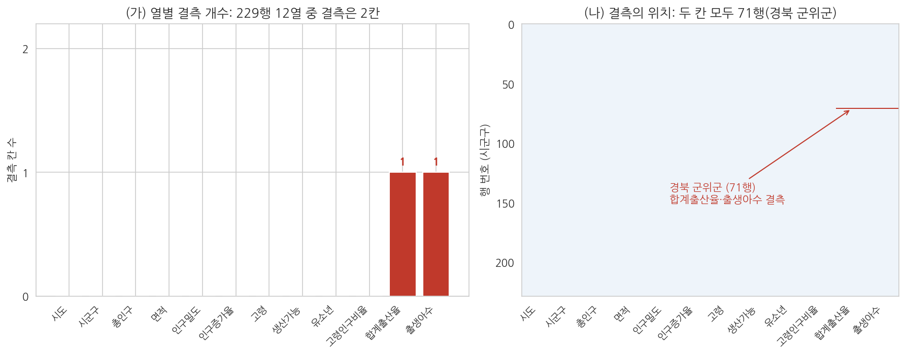
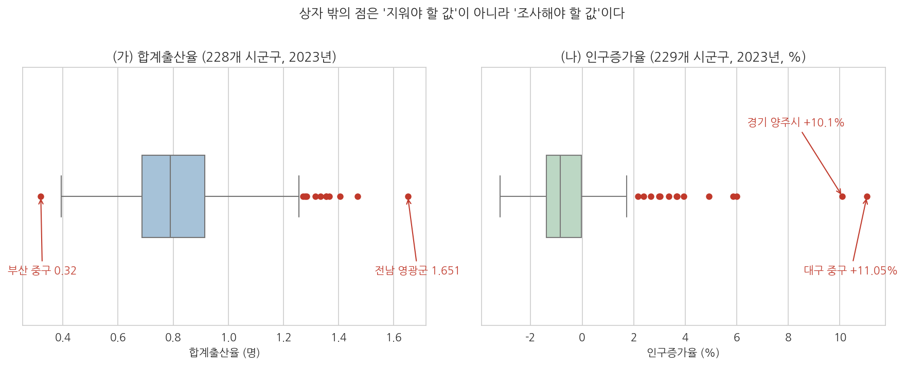
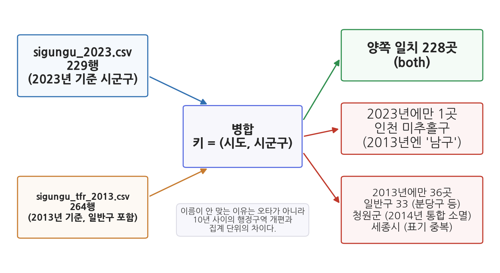

7주차 1회차. 데이터 정제: 지저분한 현실 다루기
깔끔한 데이터셋은 모두 서로 닮았지만, 지저분한 데이터셋은 저마다의 방식으로 지저분하다. (해들리 위컴, 「Tidy Data」, 톨스토이 『안나 카레니나』 첫 문장의 변주)
이 장에서 배우는 것
1주차의 구청 인턴 이야기를 이어 가자. 과장이 새 과제를 준다. "우리나라 시군구 출산율이 지난 10년 사이 어떻게 변했는지 정리해 줄래요? 오른 곳도 있는지 궁금하네." 여러분은 5주차와 6주차에서 배운 대로 데이터를 구했다. 2023년 시군구 인구·출산율 파일 하나, 2013년 시군구 출산율 파일 하나. 두 파일을 나란히 놓고 시군구별로 붙이기만 하면 될 것 같다.
그런데 막상 붙여 보면 이상한 일이 벌어진다. 한쪽 파일은 229개 시군구인데 다른 쪽은 264행이다. 2023년 파일에 있는 "인천 미추홀구"가 2013년 파일에는 없다. 반대로 2013년 파일의 "충북 청원군"은 2023년 파일 어디에도 없다. 게다가 2023년 파일을 열어 보니 경북 군위군의 합계출산율 칸은 아예 비어 있다. 어느 파일도 고장 난 것이 아니다. 지난 10년 사이에 실제로 행정구역이 바뀌었고, 데이터는 각자 자기 시점의 세상을 기록했을 뿐이다.
현실의 공공데이터는 이렇다. 내려받은 그대로 분석에 넣을 수 있는 데이터는 교과서 안에만 있다. 빈 칸이 있고, 튀는 값이 있고, 숫자가 문자로 저장되어 있고, 이름이 어긋난다. 이 지저분함을 분석 가능한 상태로 다듬는 일이 데이터 정제이고, 이번 주의 주제다. 5주차에서 데이터의 건강 상태를 진단(프로파일링)했다면, 이번 주는 치료에 해당한다. 그리고 여기서 다듬은 데이터가 8주차 탐색적 분석의 재료가 된다.
이 장에서는 구체적으로 다음을 배운다.
- 현실의 공공데이터가 지저분할 수밖에 없는 이유
- 결측값의 세 가지 유형과 처리 원칙 (지우기 전에 이유부터)
- 이상치와 오류값을 구분하는 법 (삭제가 아니라 판단)
- 자료형의 함정: 문자로 저장된 숫자, 천 단위 쉼표, 단위 불일치
- 행정데이터 특유의 문제: 행정구역 개편, 코드·명칭 불일치, 병합 키
- 깔끔한 데이터(tidy data)의 세 원칙
이 장은 하나의 질문을 따라 전개된다. "내려받은 데이터를 왜 바로 쓸 수 없으며, 분석 가능하게 만드는 과정에서 무엇을 판단해야 하는가?"
1.1 공공데이터가 지저분한 이유를 본다 → 1.2 빈 칸(결측값)을 다루는 원칙을 배운다 → 1.3 튀는 값(이상치)을 판단하는 법을 배운다 → 1.4 자료형이 파 놓은 함정들을 확인한다 → 1.5 두 데이터를 붙일 때(병합) 행정데이터에서 무엇이 어긋나는지 실제 사례로 본다 → 1.6 최종 목표인 "깔끔한 데이터"의 기준을 정리한다.
1.1 현실의 공공데이터는 왜 지저분한가
교과서의 데이터와 현실의 데이터
통계학 교과서의 예제 데이터는 빈 칸이 없고, 모든 열의 자료형이 올바르고, 이름이 어긋나는 일도 없다. 저자가 수업용으로 미리 다듬어 놓았기 때문이다. 현실의 공공데이터는 다르다. 데이터 분석에서 시간의 80%는 데이터를 정제하고 준비하는 데 쓰인다는 말이 있을 정도다(데이터 정제를 다룬 다수(Dasu)와 존슨(Johnson)의 2003년 책 이래 널리 인용되어 온 추정이다). 과장이 섞였을 수는 있어도, 분석보다 준비가 오래 걸린다는 방향 자체는 실무자 대부분이 동의한다.
공공데이터가 지저분한 데에는 구조적인 이유가 있다.
첫째, 공공데이터는 분석용으로 태어나지 않았다. 주민등록 데이터는 주민 관리라는 행정 업무의 부산물이고, 예산 데이터는 회계 처리의 부산물이다. 행정 업무에는 지장이 없지만 분석에는 불편한 형태(합계 행이 중간에 끼어 있는 표, 보기 좋게 병합된 셀)로 쌓이는 이유다.
둘째, 여러 기관이 여러 기준으로 만든다. 인구는 행정안전부가, 출산율은 국가데이터처(옛 통계청)가, 재정은 행정안전부의 다른 부서가 집계한다. 기관마다 지역 이름 표기, 집계 시점, 단위가 조금씩 다르다. 한쪽은 "인천광역시 미추홀구"라 쓰고 다른 쪽은 "인천 미추홀구"라 쓰는 식이다.
셋째, 사람 손을 거친다. 담당자가 엑셀에서 직접 입력하고 편집하는 과정에서 오타, 빠진 칸, "해당없음"이나 "-" 같은 문자가 숫자 열에 섞여 들어간다.
넷째, 세상이 변한다. 이것이 행정데이터에서 가장 중요한 이유다. 시군구가 통합되고 분리되고 이름이 바뀐다. 제도가 바뀌면 통계 항목 자체가 생기거나 없어진다. 2013년의 대한민국과 2023년의 대한민국은 행정구역 지도부터 다르다. 서로 다른 시점의 데이터를 잇는 순간, 이 변화가 전부 "안 맞는 이름"으로 나타난다.
데이터 정제(data cleaning)는 수집한 데이터의 결측값, 이상치, 오류값, 자료형 문제, 형식 불일치를 찾아내고, 분석 목적에 맞게 수정·보완·기록하여 분석 가능한 상태로 만드는 과정이다. 핵심은 "지우는 기술"이 아니라 "무엇을 어떻게 바꿀지 판단하고, 그 판단을 기록하는 일"이다.
진단 다음이 치료다
5주차 실습에서 우리는 에이전트에게 프로파일링을 시켰다. 행이 몇 개인지, 열마다 자료형이 무엇인지, 결측이 어디에 몇 개 있는지를 한눈에 보는 작업이었다. 프로파일링이 건강검진이라면 정제는 치료다. 그리고 치료의 대원칙은 의료와 같다. 진단 없이 치료하지 않는다. 어디가 어떻게 지저분한지 모르는 채로 "알아서 정리해 줘"라고 지시하는 것은, 검진 없이 "알아서 수술해 주세요"라고 말하는 것과 같다. 이 순서(진단 보고서를 먼저 받고, 항목별로 처리를 지시한다)는 2회차 실습의 뼈대가 된다.
1.2 결측값의 유형과 처리 원칙
빈 칸에도 이유가 있다
결측값(missing value)은 데이터에서 값이 기록되어 있어야 할 자리에 값이 없는 것을 말한다. 파이썬의 pandas는 결측을 NaN(Not a Number)이라는 특별한 표시로 나타낸다. 다만 현실 데이터에서는 결측이 빈 칸이 아니라 "-", "해당없음", "N/A", 심지어 0이나 9999 같은 값으로 위장하고 있는 경우도 많다.
우리 데이터에서 실제 사례를 보자. 2023년 시군구 파일(data/sigungu_2023.csv)은 229행 12열, 총 2,748칸이다. 이 가운데 결측은 단 2칸이다.

그림 7-1을 읽어 보자. 왼쪽(가)은 열마다 결측이 몇 칸인지 센 막대그래프다. 12개 열 중 10개는 결측이 없고, 합계출산율과 출생아수 열에 각각 1칸씩 있다. 오른쪽(나)은 그 결측이 어느 행에 있는지를 표시한 지도다. 두 칸 모두 같은 행, 71행의 경상북도 군위군이다. 여기서 알 수 있는 것은 두 가지다. 이 데이터는 전반적으로 매우 깨끗하다는 것, 그리고 결측이 무작위로 흩어져 있지 않고 특정한 한 곳에 몰려 있다는 것이다.
결측이 한 곳에 몰려 있다는 사실은 중요한 단서다. 아무 이유 없이 하필 군위군만 비었을 리 없다. 실제로 군위군은 2023년 7월 1일자로 경상북도에서 대구광역시로 편입되었다. 데이터가 기록한 2023년은 군위군의 소속이 바뀐 해다. 시도별·시군구별로 연간 통계를 집계하는 체계에서 소속이 연도 중간에 바뀐 지역은 이런 식으로 빈 칸을 남기기 쉽다. 즉 이 결측은 전산 오류나 입력 실수가 아니라 행정구역 개편의 흔적이다. 빈 칸 하나가 데이터 바깥의 사건을 가리키고 있는 셈이다.
결측의 세 가지 유형
통계학은 결측을 "왜 비었는가"에 따라 세 유형으로 나눈다. 이름은 어렵지만 아이디어는 단순하다.
표 7-1. 결측값의 세 유형
| 유형 | 뜻 | 일상 예시 | 위험도 |
|---|---|---|---|
| 완전 무작위 결측(MCAR, missing completely at random) | 아무 패턴 없이 우연히 빔 | 설문지 한 장이 스캔 중에 누락됨 | 낮음. 남은 데이터가 전체를 대표함 |
| 조건부 결측(MAR, missing at random) | 다른 관측된 특성과 관련되어 빔 | 인구가 적은 지역일수록 개인정보 보호를 위해 값이 비공개됨 | 중간. 패턴을 알면 보정 가능 |
| 비무작위 결측(MNAR, missing not at random) | 빠진 값 그 자체 때문에 빔 | 소득이 아주 높은 응답자가 소득 문항에 답하지 않음 | 높음. 남은 데이터만 보면 체계적으로 왜곡됨 |
이 구분이 왜 중요한가. 결측을 그냥 지워도 되는지가 유형에 따라 달라지기 때문이다. 완전 무작위 결측이라면 해당 행을 빼도 남은 데이터가 전체를 닮아 있다. 그러나 비무작위 결측을 지우면 특정한 집단이 통째로 사라진다. 고소득자가 소득 문항에 답하지 않는 설문에서 무응답자를 지우고 평균 소득을 내면, 평균은 실제보다 낮게 나온다. 지웠다는 사실조차 결과에 남지 않으니 더 위험하다.
군위군 사례는 어느 유형인가. 결측의 이유(행정구역 개편)가 값 자체가 아니라 그 지역의 사정과 관련되어 있으니 조건부 결측에 가깝다. 다행히 우리는 이유를 알고 있으므로, 어떻게 다룰지 판단할 수 있는 위치에 있다.
처리 원칙: 이유, 선택, 기록
결측 처리의 선택지는 크게 셋이다.
- 보존. 결측을 결측인 채로 두고, 계산할 때 제외되도록 한다. pandas의 평균 계산은 기본적으로 결측을 빼고 계산하므로, 많은 경우 가장 안전한 기본값이다.
- 삭제. 결측이 있는 행(또는 열)을 뺀다. 결측이 완전 무작위이고 소수일 때, 그리고 그 행이 분석의 다른 부분에도 필요 없을 때만 정당화된다.
- 대치. 다른 값으로 채운다(평균, 0, 앞뒤 값, 추정값). 채운 값은 실제로 관측된 적 없는 값이므로, 반드시 근거와 함께 기록해야 한다.
어느 것을 고르든 순서는 같다. 이유를 먼저 추적하고, 분석 목적에 비추어 선택하고, 무엇을 왜 했는지 기록한다. 군위군이라면 이렇게 판단할 수 있다. 출산율 분석에서는 군위군을 "값 없음"으로 보존하고 그 사실을 보고서에 명시한다. 반면 총인구 분석에서는 군위군 행을 살려 둔다. 인구 값은 멀쩡하게 있기 때문이다. "결측이 있는 행은 다 지운다"는 일괄 규칙이 왜 위험한지 보여 주는 대목이다.
"결측값을 처리해 줘"라고만 지시하면, 에이전트는 흔히
fillna(0)(0으로 채우기)이나 dropna()(결측 행 삭제)를 스스로 골라 실행한다. 우리 데이터로 그 결과를 따라가 보자. 군위군의 출산율을 0으로 채우면, 군위군은 실제 전국 최저인 부산 중구(0.320)를 제치고 "출산율 0의 전국 최저 시군구"가 된다. 존재한 적 없는 숫자가 8주차의 그래프와 순위표에 그대로 올라가는 것이다. 반대로 결측 행을 통째로 지우면, 주민 23,340명이 실제로 사는 군위군이 인구 분석에서도 소리 없이 사라진다. 두 경우 모두 에이전트는 "결측 처리를 완료했습니다"라고 명랑하게 보고한다. 결측 처리는 위임하되, 방법의 선택은 위임하지 않는다. 2회차 실습에서 이 장면을 직접 재현해 본다.
0보다는 평균이 낫지 않을까? 그래 보이지만 함정은 남는다. 첫째, 평균 대치는 존재하지 않는 관측값을 창조한다. 군위군에 전국 평균 출산율(약 0.82)을 채워 넣는 순간, 고령인구비율이 44.2%로 전국에서 두 번째로 높은 초고령 군이 "전국 평균만큼 아이가 태어나는 곳"으로 기록된다. 실제 이웃한 농촌 군들의 출산율 패턴과도, 군위군의 인구구조와도 무관한 값이다. 둘째, 평균으로 채워진 값들은 퍼짐(분산)을 실제보다 작아 보이게 만들어 9주차에 배울 통계 분석을 미묘하게 왜곡한다. 대치가 필요한 상황은 분명히 있지만, "무엇으로 채웠고 왜 그 값인지"를 설명할 수 없다면 채우지 않는 것이 낫다.
1.3 이상치와 오류값: 삭제가 아니라 판단
튀는 값이 나타났다
이상치(outlier)는 다른 값들에 비해 두드러지게 크거나 작은 값이다. 이상치는 실제 현상일 수도 있고 잘못 기록된 값일 수도 있다. 후자, 곧 측정·입력·처리 과정의 실수로 생긴 잘못된 값을 오류값(error)이라 한다. 모든 오류값은 걸러내야 하지만, 이상치가 곧 오류값인 것은 아니다. 이 구분이 이 절의 전부다.
실제 데이터에서 튀는 값을 찾아보자.

그림 7-2는 박스플롯(box plot)이라는 그림이다. 자세한 문법은 8주차에서 배우고, 오늘은 읽는 법만 알면 된다. 가운데 상자는 전체 시군구의 가운데 절반이 모여 있는 범위이고, 상자에서 뻗은 수염 바깥의 점들은 무리에서 떨어져 "튀는" 값들이다. 왼쪽(가)의 합계출산율을 보면 오른쪽 끝에 전남 영광군(1.651)이 있고 왼쪽 끝에 부산 중구(0.320)가 있다. 오른쪽(나)의 인구증가율에서는 대구 중구(+11.05%)와 경기 양주시(+10.1%)가 유난히 크다. 시군구 대부분의 인구가 제자리이거나 줄어드는 가운데 1년 새 인구가 10% 넘게 늘어난 곳이 두 곳 있는 것이다.
지우기 전에 물어야 할 질문
에이전트에게 "이상치를 제거해 줘"라고 지시하면, 에이전트는 흔히 통계적 규칙(수염 바깥의 점)을 기준으로 그림 7-2의 빨간 점들을 기계적으로 걸러낸다. 그 결과는 어떤가. 전국에서 출산율이 가장 높은 군과 가장 낮은 구, 인구가 가장 빠르게 느는 지역들이 분석에서 사라진다. 저출산과 인구이동을 다루는 분석이라면 가장 흥미로운 사례들만 골라서 버린 셈이 된다.
이상치 앞에서 던져야 할 질문은 "지울까 말까"가 아니라 다음 세 가지다.
- 이 값은 실제인가, 오류인가. 원자료(출처 포털의 화면)와 대조하고, 가능하면 다른 출처와 교차 확인한다. 영광군의 출산율 1.651은 이 파일이 기록한 실제 값이며, 부산 중구의 0.320도 마찬가지다. 반면 어떤 파일에서 시군구 인구가 옆 행보다 딱 10배 크다면(예를 들어 23,340이 233,400으로 적혀 있다면) 0이 하나 더 붙은 입력 오류를 의심할 수 있다. 이것은 설명을 위한 가상의 예이고, 우리 파일에는 이런 오류가 없다.
- 오류라면, 고칠 수 있는가. 원자료에서 올바른 값을 확인할 수 있으면 수정하고, 확인할 수 없으면 결측으로 바꾼다. 어느 쪽이든 기록을 남긴다.
- 실제라면, 왜 이런 값이 나왔는가. 대구 중구의 인구 11% 증가는 데이터만으로는 이유를 알 수 없다. 대규모 아파트 입주 같은 실제 변화일 수도 있고 집계 방식의 변화일 수도 있다. 판단하려면 데이터 바깥의 정보(보도자료, 지역 뉴스, 담당 부서)를 확인해야 한다. 확인 전까지 값은 유지하되 "조사 필요"라고 표시해 둔다.
요컨대 상자 밖의 점은 지워야 할 값이 아니라 조사해야 할 값이다. 1주차에서 말한 분석가의 비교우위가 여기서도 드러난다. 통계 규칙으로 점을 찾는 일은 에이전트가 잘하지만, 그 점이 행정 현실에서 말이 되는 값인지 판단하는 일은 지역과 제도를 아는 사람의 몫이다.
1.4 자료형의 함정: 문자로 저장된 숫자, 천 단위 쉼표, 단위 불일치
정제에서 결측·이상치만큼 자주 만나는 것이 자료형 문제다. 눈으로는 멀쩡해 보이는데 계산이 안 되거나, 더 나쁘게는 계산이 잘못되는데 티가 안 나는 유형이다.
문자로 저장된 숫자와 천 단위 쉼표
공공데이터 파일에는 사람이 읽기 좋으라고 넣은 천 단위 쉼표가 자주 들어 있다. "1,234,567"처럼 말이다. 문제는 컴퓨터가 이것을 숫자가 아니라 문자로 읽는다는 점이다. 다음과 같은 인구 열이 있다고 하자 (설명용 가상 예시다).
| 동네 | 인구 (파일에 적힌 그대로) |
|---|---|
| 가동 | 9,850 |
| 나동 | 12,300 |
| 다동 | 101,500 |
쉼표 때문에 문자로 읽힌 이 열에 평균을 구하라고 하면 오류가 난다. 여기까지는 차라리 다행이다. 오류는 눈에 보이기 때문이다. 무서운 것은 정렬이다. 문자열의 크기 비교는 사전 순서이므로, "101,500"이 "12,300"이나 "9,850"보다 앞에 온다. 첫 글자끼리 비교하면 1이 9보다 작기 때문이다. "인구가 많은 순으로 정렬해 줘"라는 지시의 결과가 그럴듯한 표로 나오지만 순서는 엉터리다. 오류 메시지도 없다. 이런 열은 쉼표를 제거하고 숫자형으로 변환해야 한다.
같은 원리의 친척들도 있다. 숫자 열에 섞인 "-"나 "해당없음" 같은 문자 하나가 열 전체를 문자형으로 만들어 버린다. 5주차 프로파일링에서 "숫자여야 할 열의 자료형이 object(문자)로 나오면 의심하라"고 배운 이유가 이것이다.
사라지는 앞자리 0: 코드는 숫자가 아니다
행정데이터에는 각종 코드가 등장한다. 법정동코드, 행정기관코드, 우편번호. 이들은 숫자처럼 생겼지만 사실은 이름표다. 코드를 숫자로 읽으면 앞자리 0이 사라진다. 예를 들어 "02"로 시작하는 코드가 "2"가 되어 버리면, 코드로 두 데이터를 연결할 때 짝을 찾지 못한다 (이것도 원리를 보여 주는 일반적인 예다). 그래서 코드 열은 계산할 일이 없더라도 일부러 문자형으로 읽는 것이 원칙이다. 숫자냐 문자냐는 "생김새"가 아니라 "그 값으로 계산을 하는가"로 정한다.
단위 불일치
자료형이 올바라도 단위가 어긋나면 계산은 조용히 틀린다. 한쪽 파일은 인구를 명 단위로, 다른 쪽은 천 명 단위로 기록했다면, 두 값을 그대로 비교하는 순간 1,000배의 오차가 생긴다. 금액도 마찬가지다. 공공데이터의 예산·결산 표는 천 원, 백만 원, 억 원 단위가 파일마다 다르다. 면적은 제곱미터와 제곱킬로미터가 섞인다. 비율은 0.82처럼 소수로 적기도 하고 82처럼 퍼센트 숫자로 적기도 한다.
단위 정보는 값 자체에 없고 메타데이터에 있다. 5주차에서 배운 "숫자보다 코드북을 먼저 읽어라"는 원칙이 정제 단계에서 다시 등장하는 것이다. 참고로 우리의 2023년 파일에서 면적은 제곱킬로미터, 인구밀도는 제곱킬로미터당 명이다. 서울 양천구의 인구밀도가 약 25,050이라는 값을 보고 "1km²에 2만 5천 명"이라고 읽을 수 있으려면 단위를 알고 있어야 한다.
자료형 함정의 공통점은 "눈으로 표를 봐서는 모른다"는 것이다. 그래서 점검은 사람이 눈으로 하는 것이 아니라, 에이전트에게 열별 자료형(dtype)과 대표값을 출력하게 해서 한다. 숫자여야 할 열이 문자로 읽혔는지, 코드 열이 숫자로 읽혀 앞자리가 깎였는지, 최소·최대값이 단위 상식에 맞는지를 진단 보고서에서 확인한 다음에 변환을 지시한다. 진단 없이 변환 없다.
1.5 행정데이터 특유의 문제: 행정구역 개편, 코드·명칭 불일치, 병합 키
데이터 두 장을 붙인다는 것
분석다운 분석은 대부분 데이터 한 장으로 끝나지 않는다. 인구 데이터에 재정 데이터를 붙여야 "재정이 넉넉한 지역이 복지도 잘하는가"를 물을 수 있고, 2013년 출산율에 2023년 출산율을 붙여야 "10년간 어디가 올랐는가"를 물을 수 있다. 두 데이터를 공통 항목 기준으로 옆으로 잇는 작업을 병합이라 한다.
병합(merge)은 두 데이터를 공통 항목의 값이 같은 행끼리 짝지어 하나로 합치는 작업이다. 짝짓기 기준이 되는 공통 항목을 병합 키(merge key)라 한다. 두 반의 출석부를 학번 기준으로 맞춰 붙이는 장면을 떠올리면 된다. 이때 학번이 병합 키다. 키가 정확히 일치하는 행끼리만 짝이 되므로, 병합의 성패는 키의 품질이 결정한다.
병합 키로 쓸 수 있는 것은 두 데이터에 공통으로 있는 식별자다. 시군구 데이터라면 지역 이름이나 행정표준코드가 후보다. 그런데 행정데이터의 키에는 다른 분야에 없는 고질적인 문제가 있다. 키 자체가 세월에 따라 변한다는 것이다.
실제로 붙여 보면: 229 대 264의 수수께끼
도입에서 예고한 병합을 실제로 해 보자. 2023년 시군구 인구 파일(229행)과 2013년 시군구 합계출산율 파일(264행)을 시도와 시군구 이름을 키로 병합했다. 이 장의 모든 수치는 실제 실행 결과이며, 코드 전문은 code/ch07_merge.py에 있고 2회차 실습에서 직접 다룬다.

그림 7-3이 결과다. 양쪽에서 짝을 찾은 시군구는 228곳이다. 2023년 파일에만 있는 지역이 1곳, 2013년 파일에만 있는 행이 36개다. 안 맞는 37건의 정체를 하나씩 추적해 보면, 오타는 하나도 없다. 전부 10년 사이에 세상이 변한 흔적이다.
표 7-2. 병합에서 어긋난 행들의 정체 (실제 병합 결과)
| 유형 | 실제 사례 | 건수 | 무슨 일이 있었나 |
|---|---|---|---|
| 명칭 변경 | 인천 미추홀구 vs 인천 남구 | 1 + 1 | 2018년에 인천 남구가 미추홀구로 이름을 바꿨다. 같은 지역이 두 파일에 다른 이름으로 있다 |
| 통합으로 소멸 | 충북 청원군 | 1 | 2014년에 청주시와 통합되었다. 2023년의 지도에는 없는 지역이다 |
| 편입 (소속 변경) | 경북 군위군 | (결측 1) | 2023년 7월 대구로 편입. 이름은 양쪽에 있어 짝은 맞지만, 2023년 출산율 값이 결측이다 |
| 표기 중복 | 세종 "세종특별자치시"와 "세종시" | 1 | 2013년 파일에 같은 지역이 두 표기로 중복 수록되어 있고, 그중 "세종시" 표기가 2023년 파일과 안 맞는다 |
| 집계 단위 차이 | 수원시 장안구, 성남시 분당구, 창원시 진해구, 전주시 완산구 등 | 33 | 2013년 파일은 대도시 안의 일반구를 별도 행으로 담았지만 2023년 파일은 시 단위로만 기록했다 |
각 유형은 대처가 다르다. 미추홀구처럼 이름만 바뀐 경우는 한쪽 이름을 고쳐 짝을 살린다(2013년의 "인천 남구"를 "인천 미추홀구"로 바꾸면 정확히 붙는다). 일반구 33건은 시 단위 행(수원시, 성남시 등)이 양쪽에 다 있으므로 빠져도 정보 손실이 아니다. 청원군은 살릴 짝이 없으므로 "2023년 기준으로는 비교 불가"로 기록하고 보낸다. 군위군은 짝은 맞지만 값이 없으므로 1.2절의 결측 원칙으로 넘긴다.
붙었다고 끝이 아니다: 조용히 잘못 맞는 병합
여기까지는 "안 붙는" 문제였다. 더 교묘한 것은 붙긴 붙는데 잘못 붙는 경우다. 실제 사례가 우리 병합 안에 있다. 충북 청주시는 두 파일 모두에 있어서 아무 경고 없이 짝이 맞는다. 그러나 2013년의 청주시와 2023년의 청주시는 같은 이름의 다른 실체다. 2014년 통합으로 옛 청원군 지역 전체가 청주시에 편입되었기 때문이다. 2013년 파일에서 옛 청주시의 출산율은 1.341, 옛 청원군은 1.695였다. 이것을 2023년 통합 청주시(0.880)와 그대로 비교하면, 관할 범위가 다른 두 시점을 비교하는 셈이 된다. 병합 프로그램은 이런 것을 잡아 주지 않는다. 이름이 같으면 기계는 만족한다. 실체가 같은지를 묻는 것은 사람의 일이다.
동명이인의 함정: 왜 키를 두 열로 잡는가
병합 키를 "시군구 이름" 한 열로만 잡으면 어떻게 되는가. 우리나라에는 같은 이름의 시군구가 많다. "중구"라는 자치구는 서울, 부산, 대구, 인천, 대전, 울산에 하나씩 모두 6곳이고, "고성군"은 강원과 경남에 하나씩 있다. 시군구 이름만으로 두 파일을 병합해 보면(실제로 실행해 본 결과다) 서울 중구가 부산 중구의 2013년 값과도, 대구 중구의 값과도 짝지어지면서 229행이어야 할 결과가 348행으로 부풀어 오른다. 그래서 병합 키는 (시도, 시군구) 두 열의 조합으로 잡아야 한다. 더 안전한 방법은 이름 대신 행정표준코드(모든 행정구역에 부여된 고유 번호)를 키로 쓰는 것이다. 다만 코드 역시 행정구역이 개편되면 바뀌므로, 시점이 다른 데이터를 이을 때는 코드조차 만능이 아니다.
병합 검증의 제1규칙은 "행 수 대조"다. 229개 시군구를 기준으로 왼쪽 병합을 했다면 결과도 정확히 229행이어야 한다. 229보다 많으면 키가 중복되어 행이 복제된 것이고(동명이인의 함정), 적으면 행이 버려진 것이다. pandas의 병합에는 이런 사고를 미리 막는 안전장치도 있다.
indicator=True 옵션은 각 행이 양쪽에서 왔는지 한쪽에만 있었는지 표시해 주고, validate="one_to_one" 옵션은 1대1 대응이 깨지는 순간 병합을 중단시킨다. 에이전트에게 병합을 지시할 때 이 두 안전장치를 요구 사항으로 명시하는 것이 좋은 지시(3주차)다.
1.6 깔끔한 데이터(tidy data) 원칙
정제의 종착점은 무엇인가. "깨끗해 보이는" 데이터가 아니라, 분석 도구에 바로 넣을 수 있는 구조를 갖춘 데이터다. 통계학자 해들리 위컴은 이 구조에 깔끔한 데이터(tidy data)라는 이름을 붙이고 세 원칙으로 정리했다.
① 각 행은 관측 단위 하나다 (시군구 데이터라면 한 행 = 한 시군구).
② 각 열은 변수 하나다 (한 열 = 한 종류의 정보).
③ 각 칸에는 값 하나만 들어 있다.
원칙만 보면 당연하게 들리지만, 현실의 표는 이 원칙을 여러 방식으로 어긴다. 사람에게 보여 주기 위한 표와 컴퓨터가 계산하기 위한 표는 목적이 다르기 때문이다. 대표적인 위반 사례를 보자 (구조를 보여 주기 위한 가상의 표이며, 값은 실제 데이터에서 가져왔다).
위반 1. 한 칸에 여러 값. 어떤 보고서 표에 "0.406 (전국 최저 수준)"처럼 값과 촌평이 한 칸에 적혀 있다면, 숫자만 뽑아 쓸 수 없다. 값(0.406)과 비고(전국 최저 수준)는 별도 열로 갈라야 한다.
위반 2. 변수가 열 제목에 숨어 있다. 다음 두 표를 비교해 보자. 값은 모두 우리가 실제로 병합한 데이터의 것이다.
넓은 형(wide format):
| 시도 | 시군구 | 출산율_2013 | 출산율_2023 |
|---|---|---|---|
| 서울 | 종로구 | 0.729 | 0.406 |
| 경북 | 의성군 | 1.371 | 1.406 |
긴 형(long format):
| 시도 | 시군구 | 연도 | 출산율 |
|---|---|---|---|
| 서울 | 종로구 | 2013 | 0.729 |
| 서울 | 종로구 | 2023 | 0.406 |
| 경북 | 의성군 | 2013 | 1.371 |
| 경북 | 의성군 | 2023 | 1.406 |
넓은 형에서는 "연도"라는 변수가 열 제목 속에 숨어 있다. 연도별 추세 그래프를 그리거나 연도별 평균을 내는 작업은 긴 형을 기대한다. 반대로 "2013년 대비 2023년의 변화량" 열을 만드는 계산은 넓은 형이 편하다. 어느 쪽이 항상 옳은 것이 아니라, 다음 분석 단계가 기대하는 형태로 바꿀 수 있어야 한다는 것이 요점이다. pandas에는 두 형태를 오가는 변환 기능이 있고, 에이전트는 "긴 형으로 바꿔 줘"라는 지시를 알아듣는다.
위반 3. 보고서용 장식. KOSIS나 기관 보고서에서 내려받은 엑셀 표에는 두 줄짜리 머리글, 병합된 셀, 중간에 끼어 있는 "합계" 행, 표 아래의 각주가 흔하다. 사람 눈에는 친절하지만 분석 도구에는 전부 장애물이다. 정제 단계에서 머리글을 한 줄로 펴고, 합계 행을 데이터 행과 분리하고, 각주는 별도 문서로 옮긴다.
깔끔함의 기준이 생기면 정제 작업 전체에 방향이 생긴다. 결측·이상치 처리(1.2, 1.3절)가 값의 정제라면, 자료형 정리(1.4절)는 열의 정제이고, 병합 키 정리(1.5절)와 tidy 원칙(이 절)은 구조의 정제다. 2회차 실습에서는 이 순서 그대로, 진단부터 병합·검증까지를 에이전트와 함께 수행한다.
요약
현실의 공공데이터는 행정 업무의 부산물로 태어나 여러 기관의 손을 거치고 세상의 변화를 그대로 반영하므로 지저분할 수밖에 없으며, 분석보다 정제에 더 많은 시간이 드는 것이 정상이다. 결측값은 "왜 비었는가"에 따라 세 유형으로 나뉘고, 처리의 원칙은 이유 추적, 목적에 맞는 선택(보존·삭제·대치), 그리고 기록이다. 2023년 시군구 데이터의 유일한 결측인 군위군 출산율은 행정구역 개편의 흔적으로, 결측에도 이유가 있음을 보여 준다. 이상치는 오류값과 다르며, 상자 밖의 점은 지울 값이 아니라 조사할 값이다(영광군 1.651과 부산 중구 0.320은 모두 실제 값이다). 자료형의 함정(문자로 저장된 숫자, 천 단위 쉼표, 앞자리 0이 깎이는 코드, 단위 불일치)은 눈에 보이지 않으므로 진단 보고서로 잡는다. 행정데이터의 병합에서는 행정구역 개편과 명칭·집계 단위 불일치 때문에 키가 어긋나며(미추홀구, 청원군, 군위군, 일반구 33건), 이름이 같아도 실체가 다른 경우(통합 전후의 청주시)와 동명이인(중구 6곳)의 함정이 있으므로 키 설계와 행 수 검증이 필수다. 정제의 종착점은 깔끔한 데이터, 곧 행 하나가 관측 하나, 열 하나가 변수 하나, 칸 하나가 값 하나인 구조다.
연습문제
7-1. 결측 처리 판단. 어느 시의 동별 데이터에서 "청소년 상담 건수" 열에 결측이 3개 있다. 조사해 보니 (a) 한 동은 상담센터가 없어서 집계 자체가 없었고, (b) 한 동은 담당자가 보고서를 늦게 내서 빠졌고, (c) 한 동은 이유를 알 수 없다. 세 결측 각각에 대해 0으로 채우기, 평균으로 채우기, 결측으로 보존하기 중 무엇이 적절한지 고르고 이유를 한 문장씩 쓰라. (힌트: (a)의 결측은 사실 "0건"과 같은가, 다른가를 먼저 따져 보라.)
7-2. 병합 키의 함정. 후배가 "전국 시군구 인구 파일과 재정 파일을 시군구 이름으로 병합했더니 행이 크게 늘어났어요. 데이터가 풍부해진 거죠?"라고 말한다. 이 장에서 배운 내용으로 (1) 행이 늘어난 원인을 추정하고, (2) 왜 문제인지 설명하고, (3) 해결 방법을 두 가지 제시하라.
7-3. 지저분한 표 진단. 어느 보고서에서 가져온 아래 표가 깔끔한 데이터의 세 원칙 중 무엇을 어기고 있는지 모두 찾고, 분석 가능한 형태로 어떻게 고칠지 서술하라.
| 지역 | 2022 예산(백만원) | 2023 예산(억원) | 비고 |
|---|---|---|---|
| A구 | 1,250 | 15 | 전년 대비 증가 |
| B구 | 980 | 9.5(잠정) | |
| 합계 | 2,230 | 24.5 |